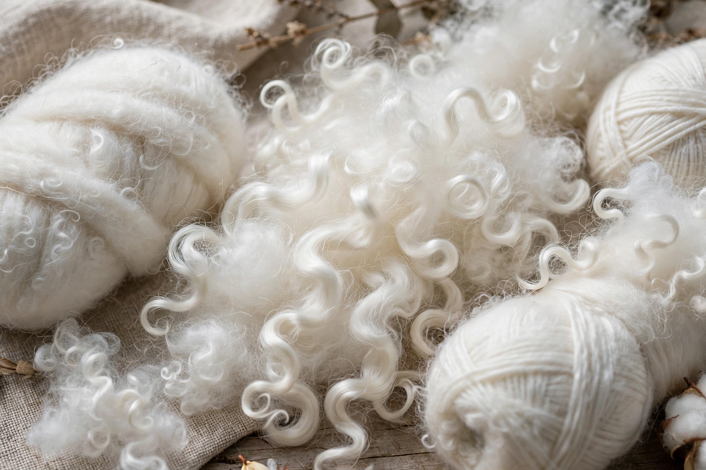

Mohair is a fiber made from the hair of the Angora goat (not to be confused with Angora wool from the Angora rabbit). Both durable and resilient, mohair is notable for its high luster and sheen, qualities that have earned it the name "Diamond Fiber", and is often used in fiber blends to add these qualities to a textile.

| Mohair | |
|---|---|
| Source | Angora goat |
| Major producers | South Africa, Turkey, United States (Texas), Lesotho, Argentina, Australia |
| Uses | Sweaters, suits, scarves, upholstery, carpets |
Mohair takes dye exceptionally well, is flame-resistant, crease-resistant, and does not felt readily. The fiber diameter increases with the age of the goat. Young goats produce fine hair used for clothing; older goats produce coarser hair used for carpets and upholstery. Mohair is warm in winter and cool in summer due to its moisture-wicking properties.
Goats are shorn twice a year, in spring and fall, yielding on average 4–5 kg per goat. South Africa is the world's largest producer, accounting for around half of global output. The word mohair derives via French and Italian from Arabic mukhayyar, a type of haircloth.
Angora goats originated in the district of Angora (Ankara) in Turkey. Mohair production spread in the 19th century to South Africa and to Texas in the United States, where the Edwards Plateau became a center of production.
Mohair is used in scarves, hats, sweaters, suits, coats, socks, and home furnishings, and as pile fabric for teddy bears and doll hair. It is often blended with wool or synthetic fibers.